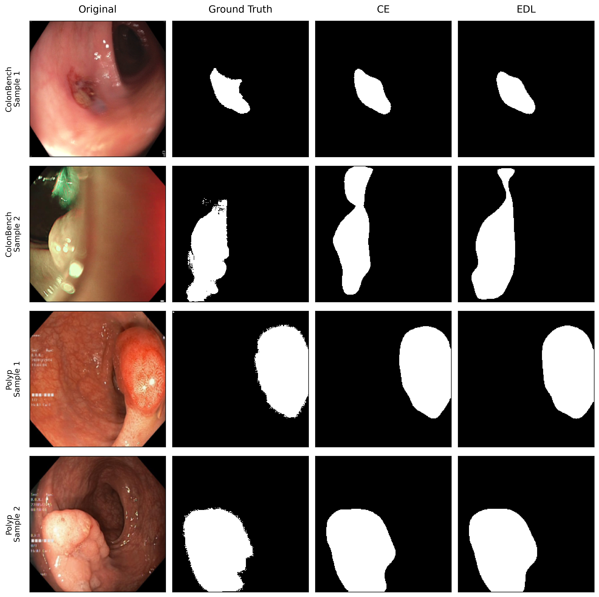

The experiments were conducted on a gastrointestinal endoscopic image dataset containing 10,436 images across 16 classes.
The dataset was divided into training and validation sets using an 85:15 stratified split, resulting in 8,870 training images and 1,566 validation images.
All images were resized to 224 × 224 pixels and normalized using ImageNet statistics. Random horizontal flipping was applied during training.
Two classification configurations were evaluated using a GastroNet DINOv1-pretrained ViT-B/16 backbone to compare Cross-Entropy (CE) and Evidential Deep Learning (EDL).
| Setting | Backbone Initialization | Loss Function |
|---|---|---|
| 1 | GastroNet DINOv1-pretrained ViT-B/16 | Cross-Entropy (CE) |
| 2 | GastroNet DINOv1-pretrained ViT-B/16 | Evidential Deep Learning (EDL) |
The backbone was initialized with weights obtained from self-supervised pretraining on GastroNet images. CE used standard cross-entropy loss, while EDL used a Dirichlet-based evidential loss to model classification evidence and predictive uncertainty.
All ViT models were fine-tuned using the AdamW optimizer with a learning rate of 1 × 10⁻⁴ and a weight decay of 1 × 10⁻⁴.
Training was performed for 15 epochs with a batch size of 512.
The best checkpoint was selected based on the highest validation Macro-F1 score.
Figure 1 presents the validation Macro-F1 scores across training epochs for the two GastroNet DINOv1-based classification configurations. The curves illustrate the convergence behavior and classification performance of Cross-Entropy (CE) and Evidential Deep Learning (EDL).
Figure 1. Validation Macro-F1 across training epochs for GastroNet DINO + CE and GastroNet DINO + EDL. Hover over the curves to inspect individual values.
Table 2 summarizes the validation classification performance of the two GastroNet DINOv1-based configurations using Accuracy, Macro-F1, and Weighted-F1.
| Model | Accuracy | Macro-F1 | Weighted-F1 |
|---|---|---|---|
| GastroNet DINO + CE | 0.9278 | 0.8741 | 0.9265 |
| GastroNet DINO + EDL | 0.9317 | 0.8845 | 0.9329 |
Table 2. Classification performance on the validation set.
GastroNet DINO + EDL outperformed GastroNet DINO + CE across all three classification metrics, achieving an accuracy of 0.9317, a Macro-F1 of 0.8845, and a Weighted-F1 of 0.9329.
Figure 2 presents the row-normalized confusion matrices for the two GastroNet DINOv1-based classification configurations: Cross-Entropy (CE) and Evidential Deep Learning (EDL). The horizontal axis represents predicted classes, while the vertical axis represents ground-truth classes. Cell colors indicate row-normalized proportions. Hovering over a cell displays the corresponding sample count and percentage.
Figure 2. Row-normalized confusion matrices for GastroNet DINO + CE (left) and GastroNet DINO + EDL (right).
Two datasets were used for the segmentation experiments: ColonBench and HyperKvasir Polyp. Both datasets were used for binary semantic segmentation, distinguishing foreground regions from the background.
ColonBench. The ColonBench segmentation dataset consists of 264 colonoscopy videos with corresponding frame-level segmentation masks. A total of 57,289 image–mask pairs were extracted from these videos for image-based segmentation.
The ColonBench dataset was divided into training and validation sets using an 85:15 split within each video. To prevent videos containing more frames from dominating training, a video-balanced sampling strategy was applied. Each training frame was assigned a sampling weight inversely proportional to the number of training frames in its source video. A weighted random sampler with replacement was used to draw training samples, giving each video approximately equal sampling probability.
HyperKvasir Polyp. The HyperKvasir Polyp dataset contains 1,000 endoscopic images with corresponding pixel-level polyp segmentation masks. The segmentation task was formulated as binary polyp segmentation, distinguishing polyp regions from the surrounding background.
For both datasets, images and masks were resized to 224 × 224 pixels. Bilinear interpolation was applied to images, while nearest-neighbor interpolation was used for masks to preserve discrete labels. Images were normalized using ImageNet statistics.
During training, random horizontal and vertical flipping were independently applied with a probability of 0.5. The same spatial transformations were applied to each image and its corresponding mask.
Four segmentation experiments were conducted using a fixed GastroNet DINOv1-pretrained ViT-B/16 backbone. The experiments cover two datasets, ColonBench (Video Balanced) and HyperKvasir Polyp, with two training loss configurations: CE and EDL.
| Configuration | Dataset | Backbone | Loss |
|---|---|---|---|
| 1 | ColonBench | GastroNet DINOv1 ViT-B/16 | CE |
| 2 | ColonBench | GastroNet DINOv1 ViT-B/16 | EDL |
| 3 | HyperKvasir Polyp | GastroNet DINOv1 ViT-B/16 | CE |
| 4 | HyperKvasir Polyp | GastroNet DINOv1 ViT-B/16 | EDL |
The backbone and segmentation architecture were kept fixed across all four configurations to investigate the effect of the training loss within each dataset. CE and EDL were compared separately on ColonBench and HyperKvasir Polyp.
Since the two datasets have different image distributions and validation sets, Dice and IoU results are reported separately for each dataset rather than used to directly rank all four configurations.
All experiments used a ViT-B/16 encoder with a convolutional segmentation decoder. The models were trained end-to-end using AdamW with a learning rate of 1 × 10⁻⁴ and weight decay of 1 × 10⁻⁴, for 50 epochs with a batch size of 256.
The CE configuration combined cross-entropy and Dice loss, while the EDL configuration used a Dirichlet-based evidential loss without an additional Dice term.
The best checkpoint was selected based on the highest validation Dice score. Dice and IoU were used to evaluate segmentation performance, with predictive uncertainty additionally recorded for EDL.
Figure 3 presents the training loss, validation loss, validation Dice, and validation IoU across training epochs for the four segmentation configurations. CE and EDL are compared within each dataset: ColonBench and HyperKvasir Polyp.
The loss curves illustrate training convergence, while Dice and IoU measure segmentation performance. Since CE and EDL use different loss functions, their loss values are not directly comparable. Performance comparisons are made within each dataset.
Figure 3. Training loss, validation loss, validation Dice, and validation IoU across training epochs for CE and EDL on ColonBench (Video Balanced) and HyperKvasir Polyp. Hover over the curves to inspect individual values.
Table 3 summarizes the segmentation performance of the four experimental configurations. For each configuration, the checkpoint with the highest validation Dice score was selected, and Dice and IoU are reported at the corresponding epoch.
| Model | Best Epoch | Dice | IoU |
|---|---|---|---|
| ColonBench - CE | 3 | 0.4028 | 0.3205 |
| ColonBench - EDL | 4 | 0.3385 | 0.2697 |
| HyperKvasir Polyp - CE | 45 | 0.8847 | 0.8195 |
| HyperKvasir Polyp - EDL | 42 | 0.8807 | 0.8114 |
On ColonBench, CE achieved a Dice score of 0.4028 and an IoU of 0.3205, outperforming EDL (Dice: 0.3385; IoU: 0.2697).
On HyperKvasir Polyp, both configurations achieved substantially higher segmentation scores. CE obtained a Dice score of 0.8847 and an IoU of 0.8195, compared with 0.8807 and 0.8114 for EDL, respectively. The performance difference between CE and EDL was relatively small on this dataset.
Figure 4 presents qualitative segmentation results for four selected samples: two from ColonBench and two from HyperKvasir Polyp. Each row displays the original image, ground-truth mask, and predictions from the CE and EDL models.
CE and EDL predictions are compared on the same images within each dataset, allowing visual assessment of segmentation boundaries and foreground regions.

Figure 4. Qualitative segmentation results on ColonBench (top two rows) and HyperKvasir Polyp (bottom two rows). Columns show the original image, ground truth, CE prediction, and EDL prediction.
The image captioning framework integrates visual features from a ViT-B/16 encoder with classification and segmentation features to condition Qwen2.5-0.5B for caption generation. Three baselines were designed with different feature combinations.

Figure 5. Architecture of Baseline 3, incorporating visual, classification, segmentation, and evidential features.
In Baseline 3, probability and evidence features are projected alongside visual features into the 896-dimensional Qwen embedding space. The resulting 327 tokens are concatenated to form a multimodal prefix for autoregressive caption generation.
The image captioning experiments used a dataset derived from Kvasir-v2, as used in the Hallucination-Aware VLM work. The dataset contains 1,816 image–caption pairs covering gastrointestinal endoscopic images across eight categories, including polyps, esophagitis, ulcerative colitis, and normal anatomical findings. The textual descriptions were used as supervision for caption generation.
Three baselines were evaluated to investigate the contribution of classification, segmentation, and evidential features to image captioning.
| Baseline | Input Features | Tokens |
|---|---|---|
| 1 | ViT visual features | 197 |
| 2 | ViT + CE classification and segmentation probabilities | 262 |
| 3 | ViT + EDL classification and segmentation probabilities and evidence | 327 |
For Baselines 2 and 3, two segmentation models were used, trained separately on ColonBench and HyperKvasir Polyp. Baseline 2 used CE-trained segmenters, while Baseline 3 used EDL-trained segmenters. Together with Baseline 1, this resulted in five captioning configurations.
The pretrained feature extractors were frozen, while the multimodal adapters and Qwen2.5-0.5B decoder were trained for caption generation.
Figure 6 presents the training and validation loss across epochs for the five captioning configurations, comparing the convergence behavior of the three baselines with different segmentation feature extractors.
Figure 6. Training and validation loss across epochs for the five captioning configurations.
Table 4 compares the five captioning configurations using validation loss, BLEU, and BERTScore F1. The Oracle columns report performance when predicted classification probabilities are replaced with ground-truth class information, while the segmentation features remain unchanged. Higher BLEU and BERTScore F1 indicate better caption quality.
| Configuration | Best Val Loss ↓ | BLEU ↑ | Oracle BLEU ↑ | BERTScore F1 ↑ | Oracle BERTScore F1 ↑ |
|---|---|---|---|---|---|
| Baseline 1 | 0.9145 | 39.2021 | — | 0.9452 | — |
| Baseline 2 - ColonBench | 0.9256 | 37.6185 | 37.8867 | 0.9455 | 0.9455 |
| Baseline 2 - Polyp | 0.9203 | 38.6805 | 38.7351 | 0.9453 | 0.9452 |
| Baseline 3 - ColonBench | 0.9169 | 37.5911 | 37.3830 | 0.9389 | 0.9389 |
| Baseline 3 - Polyp | 0.9254 | 36.7354 | 36.9933 | 0.9423 | 0.9423 |
Table 4. Captioning performance on the validation set. Oracle evaluation is applicable only to Baselines 2 and 3.
Baseline 1 achieved the lowest validation loss and highest standard BLEU score, while Baseline 2 - ColonBench achieved the highest BERTScore F1. Classification Oracle evaluation produced small BLEU changes, with no consistent improvement across configurations.
Figure 7 compares reference captions with predictions from the five configurations and their classification Oracle variants.
Figure 7. Qualitative comparison of generated captions on three validation images.
The models describe normal anatomical findings consistently, but some generated captions omit polyps present in the reference descriptions. Classification Oracle inputs produce limited changes in these examples.